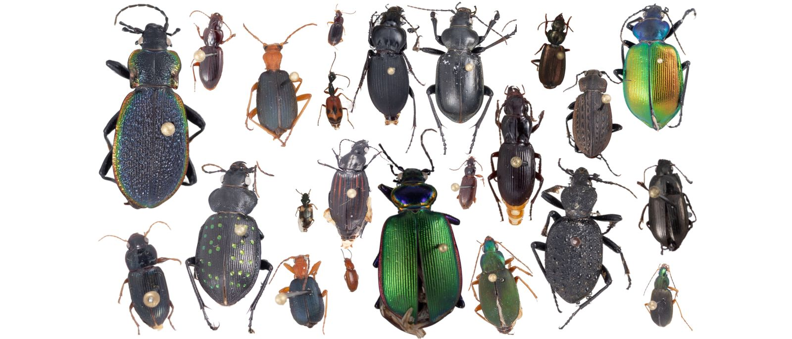
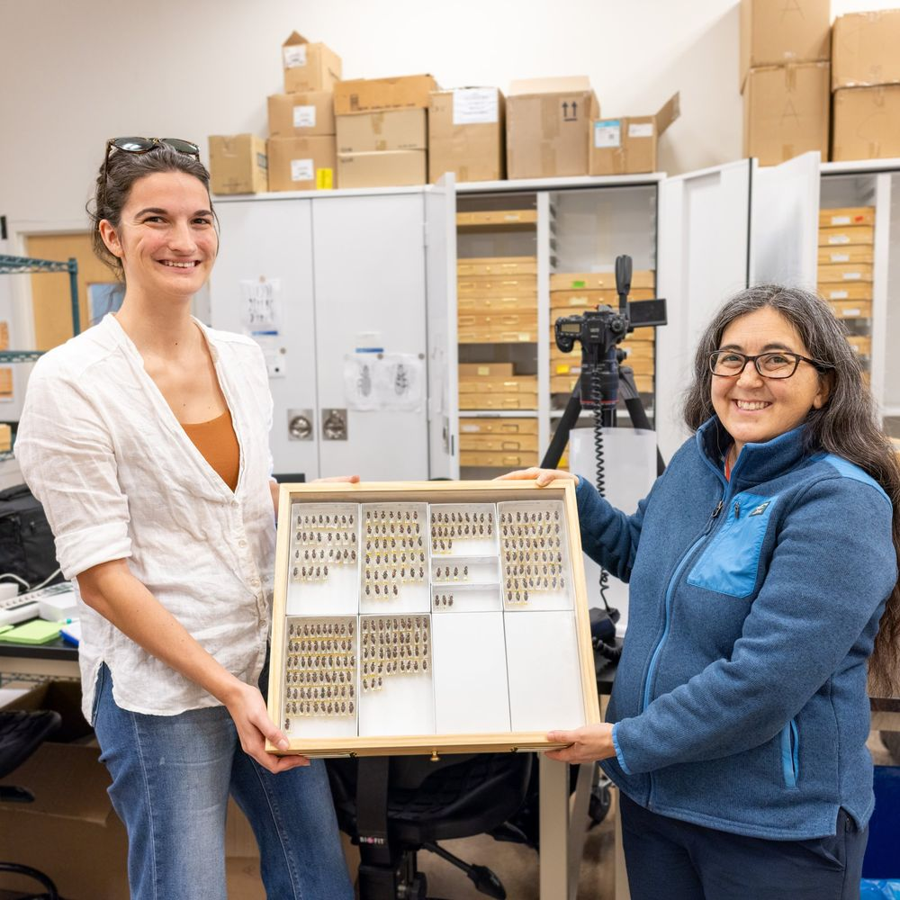

Scaling biodiversity with beetles, big data, and AI
Carabid beetles, AI-powered imaging, and trait-based ecology at continental scale

I study carabid beetles in the NEON Biorepository, developing AI-powered imaging pipelines to extract functional traits at scale. By linking ecology, computer vision, and biodiversity informatics, my work advances trait-based approaches to understanding ecosystems in a rapidly changing world.
My research brings together large-scale ecological data, AI, and biodiversity collections to address fundamental questions in ecology and evolution. Working with carabid beetles archived at the NEON Biorepository, I use high-throughput imaging and computer vision tools, developed in collaboration with the Imageomics Institute, to automate measurement of functional traits such as elytra size and shape. These traits provide key insights into ecological strategies, species interactions, and responses to environmental change.
This interdisciplinary project combines big data from NEON's continental-scale monitoring network with AI pipelines for image analysis, creating one of the largest trait datasets for a highly diverse and ecologically important insect group. By integrating remote sensing, trait-based ecology, and machine learning, I aim to uncover patterns of intraspecific variation, biodiversity scaling, and ecosystem resilience across North America.
Attention and citation counts update automatically. Download figure last checked manually.
Publications
- Optimizing image capture for computer vision-powered taxonomic identification and trait recognition of biodiversity specimens. Methods in Ecology and Evolution.
- A continental-scale dataset of ground beetles with high-resolution images and validated morphological trait measurements. Nature Scientific Data.
- Automatic image-level morphological trait annotation for organismal images. International Conference on Learning Representations (ICLR).
- Fine-grained beetle taxonomy with vision models: a benchmark on long-tailed and domain-adaptive classification. IEEE/CVF International Conference on Computer Vision (ICCV).
Collaborators & resources
- Collaborators NSF Imageomics Institute, NEON Biorepository
- Code CarabidImaging processing pipeline
- Adopted by NSF HDR Machine Learning Challenge (Sentinel Beetles benchmark)
Gallery
